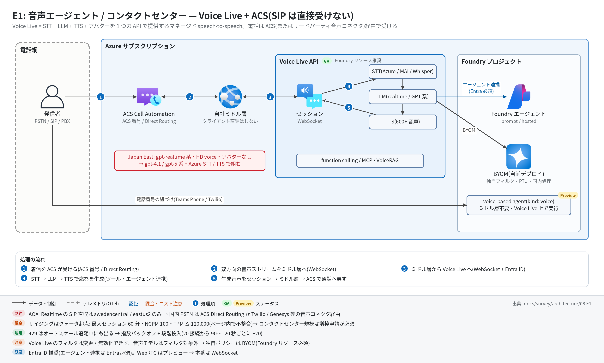
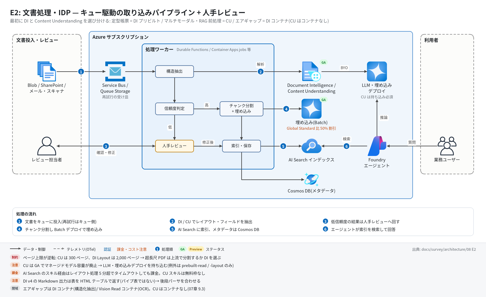
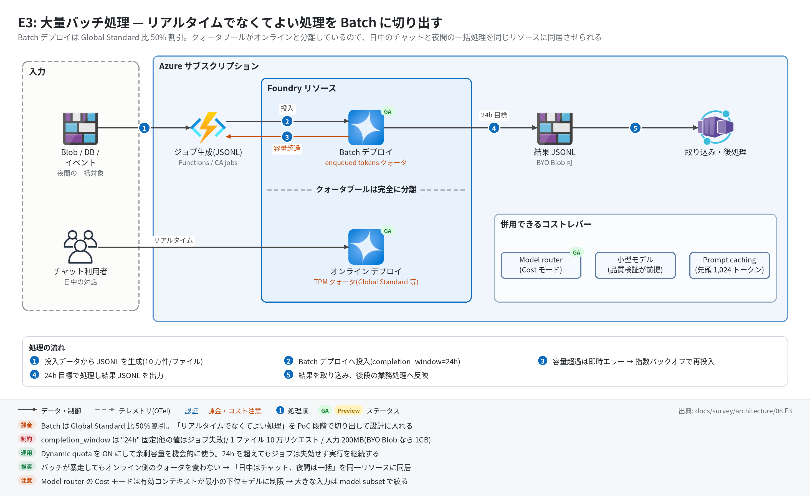
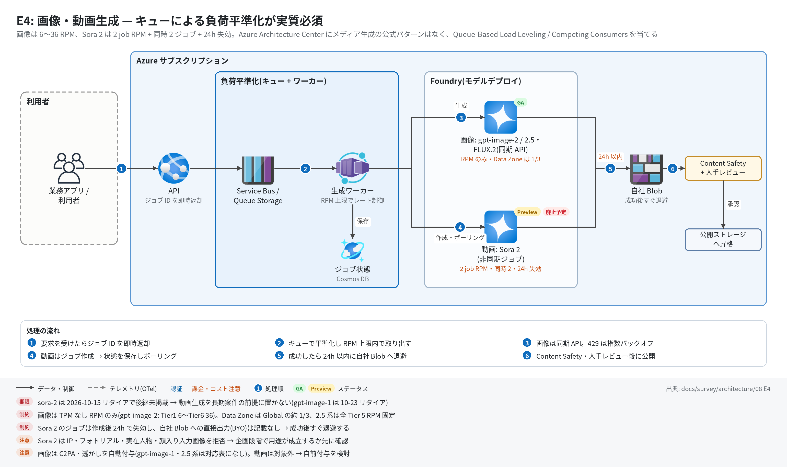
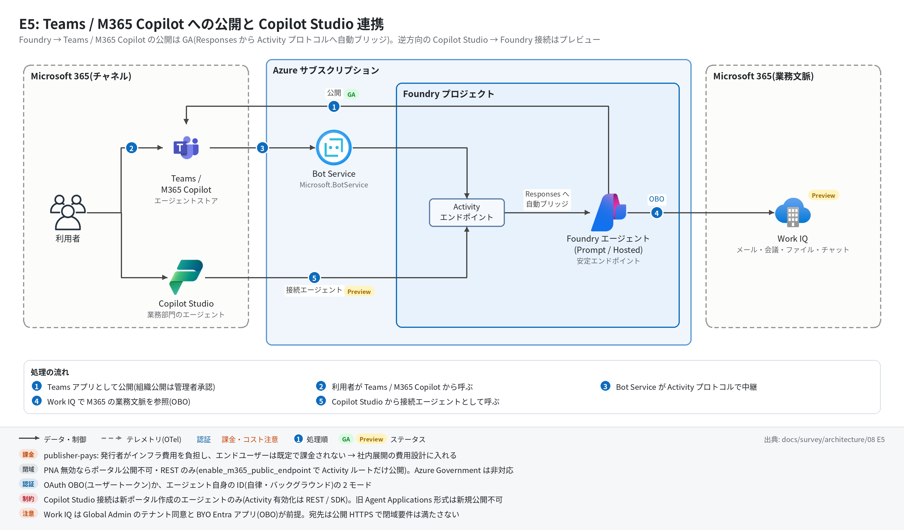
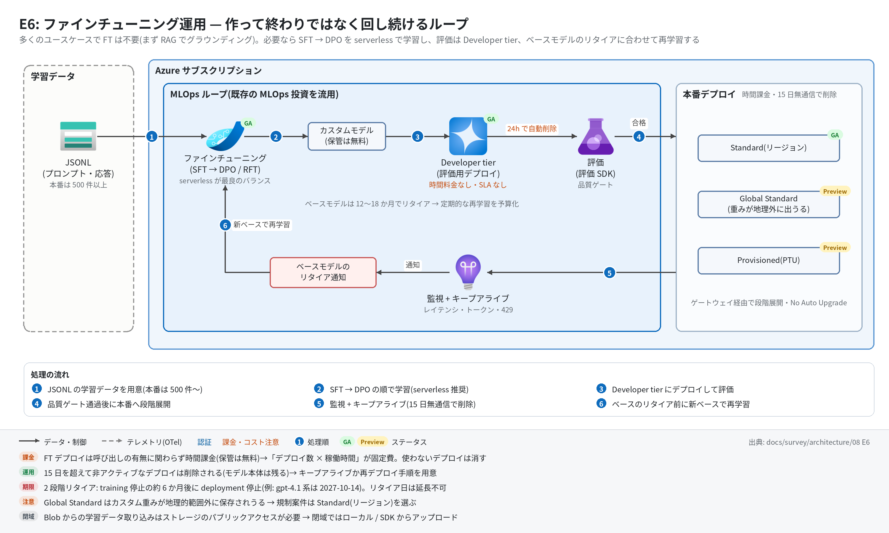

08. ユースケース編 E — 音声・文書処理(IDP)・大量バッチ・マルチモーダル・M365 連携
最終更新: 2026-07-30(公式ドキュメントとの突合検証で訂正) / 2026-09-26(Voice Live のステータス・モデル・クォータ、voice-based agents(preview)の電話チャネル、CU 上限値、画像/動画モデルのリタイア日と gpt-image-2.5 系、Content provenance 新記事、Work IQ、FT 対応モデルを一次情報で再検証)
チャット / RAG / 業務自動化に収まらない類型をまとめる。共通するのは、Foundry Agent Service の外側にある Foundry Tools(旧 Azure AI Services)やモデル固有の API が主役になる点で、エージェント中心の設計論がそのままは当てはまらない。
パターン一覧
| # | パターン | 中核サービス | 決め手になる要件 |
|---|---|---|---|
| E1 | 音声エージェント / コンタクトセンター | Voice Live API + ACS | リアルタイム音声対話 |
| E2 | 文書処理・IDP | Document Intelligence / Content Understanding | 帳票・契約書からの構造化抽出 |
| E3 | 大量バッチ処理 | Batch デプロイ + Model router | 数万〜数百万件の分類・要約 |
| E4 | マルチモーダル生成 | 画像 / 動画モデル | 生成コンテンツの非同期処理と安全性 |
| E5 | M365 / Teams 連携 | 公開フロー + Work IQ | 業務ツール内でエージェントを使わせたい |
| E6 | ファインチューニング運用 | SFT / DPO / RFT + MLOps | 挙動・文体・タスク性能をモデル側で変えたい |
E1. 音声エージェント / コンタクトセンター

Voice Live API とは
フルマネージドの speech-to-speech 統合 API。STT + 生成 AI + TTS + アバターを単一のインターフェースで提供する。「STT → LLM → TTS」を自分でつなぐ必要がなく、公式も「デプロイも管理も不要」と明記している。
| 構成要素 | 選択肢 |
|---|---|
| STT | Azure speech to text(既定)/ mai-transcribe(プレビュー。現在は mai-transcribe-2 のエイリアス)/ whisper-1 / gpt-4o-transcribe / gpt-4o-mini-transcribe / gpt-4o-transcribe-diarize |
| LLM | gpt-realtime-2.1 / -2.1-mini / -2.1-datazone(Voice Live 上はプレビュー)/ gpt-realtime-1.5 / gpt-realtime / gpt-realtime-mini(各 -datazone 版あり)/ gpt-4o 系 / gpt-4.1 系 / gpt-5〜gpt-5.4 系 / gpt-5.6-terra / gpt-5.6-luna / phi4-mm-realtime(プレビュー)/ azure-realtime(2026-07-25 GA)。gpt-5.5 / gpt-5.4-mini / gpt-5.4-nano は事前デプロイされず BYOM 経由(overview 2026-09-06 版) |
| TTS | 600+ voices・150+ locales、HD voices、MAI-Voice-2-Flash(プレビュー)、Custom Voice(限定アクセス) |
| アバター | standard / custom / photo avatar(静止画 1 枚から talking head)。viseme 出力、word 単位タイムスタンプ |
| 会話品質 | ノイズ抑制、エコーキャンセル、日本語対応のセマンティック VAD、フィラー除去、barge-in(割り込み)、auto-truncate |
| ツール | function calling(同期 / 非同期)、MCP、VoiceRAG パターン |
⚠ ライフサイクル: サーフェスごとに GA / Preview が分かれる(2026-09-26 再検証)
2026-07-30 時点では GA 一覧表だけを根拠に「プレビュー」と整理したが、これは不正確だった。一次情報はサーフェスごとに次のように書いている:
| サーフェス | ステータス | 出典 |
|---|---|---|
| Voice Live API 本体(WebSocket・SDK 直叩き) | GA(2025-11)。API 2026-07-15 が GA で SDK の既定(2025-10-01 / 2026-04-10 も安定版) |
Speech What's new(Voice Live タブ)(2026-05-22 版、July 2026 節まで記載) |
| Foundry Agent Service 統合・MCP 統合・auto-truncation・proactive messages・テレメトリ | GA(2026-04、API 2026-04-10) |
同上 |
| Hosted agents × Voice Live | GA(ブログ 2026-09-09「Hosted Agents with Voice Live are also generally available」) | What's new in Microsoft Foundry: July and August 2026 |
| Foundry ポータルの「Build > Agents — Voice Live」 | Preview | GA 一覧表(ms.date 2026-08-14、2026-09-26 確認) |
voice-based agents(agent kind = voice、VoiceAgents=V1Preview ヘッダー、電話チャネル) |
Preview | limits-quotas-regions(2026-09-07 版)/ configure-voice-agent(2026-09-25 版) |
提案での扱い: 「Voice Live API を自社ミドル層から WebSocket で呼ぶ」構成は GA として扱える。Foundry ポータル上のエージェント体験・voice-based agents・電話チャネルに依存する構成は Preview。GA 一覧表(Foundry 側の最終権威)と Speech 側・ブログの表記が食い違ったままなので、SLA を論点にする案件では Microsoft への個別確認が引き続き必要。
個別機能で明示的にプレビューなのは:
- WebRTC 接続(SLA なし・本番非推奨の標準免責文つき。webrtc ページ 2026-04-30 版)
gpt-realtime-2.1系(Voice Live の対応表上。リタイア表 2026-09-21 版では gpt-realtime-2.1 / -mini は GA)、phi4-mm-realtime、mai-transcribe(mai-transcribe-2)、MAI-Voice-2-Flash、BYOM の Anthropic プロファイル、評価ハーネス(2026-05)auto-truncation(2026-04 に GA。2026-07-30 版の記載は誤り)
本番設計では WebRTC を外し WebSocket に寄せるのが安全。
接続モデル
| 方式 | 位置づけ |
|---|---|
| WebSocket(既定・本番向け) | 「サーバー間統合が容易」と公式に位置づけられている。フロントから直接ではなく、自社ミドル層を挟む前提 |
| WebRTC(プレビュー) | WS 制御チャネルで SDP 交換。Global standard デプロイのみで最寄りリージョンへ自動ルーティング |
| アバター映像 | WebSocket セッション内で SDP 交換し、音声とは別に WebRTC/ICE で映像配信 |
WebRTC 利用時は 3 チャネル構成(WS 制御 / WebRTC データチャネル / RTP メディア)になり、アバター設定は side-band 制御では未サポート。
認証は Microsoft Entra ID(推奨)または API キー。ただしエージェント連携モードは Entra ID 必須。
セッション上限とクォータ(サイジングの起点)
| 項目 | 値(Speech リソース Standard S0) |
|---|---|
| 新規接続 / 分(NCPM) | 100(2026-07-30 時点は 30。quotas-and-limits 2026-09-09 版の表で変更) |
| 最大セッション長 | 60 分(voice-based agents も最大 60 分。limits-quotas-regions 2026-09-07 版) |
| トークン / 分(TPM) | ≤ 120,000 |
| 換算式 | TPM = NCPM × 4,000(NCPM を上げると TPM も自動追随。同ページの例は「30 NCPM × 4,000 = 120,000」のまま) |
| アバター併用時 | 別途 2 接続/分、発話中最大 30 分(auto-reconnect で延長可)、アイドル 5 分 |
⚠ ドキュメント間・ページ内の不整合(2026-09-26 確認): FAQ(2026-03-31 版)は「100,000 tokens per minute」、クォータページ(2026-09-09 版)は 120,000。さらにクォータページ内でも表の NCPM = 100 と換算式(100 × 4,000 = 400,000)が TPM ≤ 120,000 と整合しない。設計時にサポート確認する。
コンタクトセンター規模(同時数百コール)では必ず増枠申請が必要。増枠は専用フォームから「Voice Live API tokens per minute」を選ぶ。429 はクォータ超過だけでなくオートスケール追随中にも発生するため、指数バックオフは必須。公式の推奨負荷パターンは「20 接続から 90〜120 秒ごとに +20、失敗時は 1-2-4-4 分間隔でリトライ」。
レイテンシ
Voice Live 固有の SLO / 目標値は公式に見つからなかった。参照できる数値は以下:
- Azure OpenAI Realtime API の接続方式比較: WebRTC 約 100ms / WebSocket 約 200ms(SIP は可変)
- ガードレール処理は介入点あたり約 50〜100ms 加算
- エコーキャンセルの前提: 「再生が 2 秒以上遅延するとエコーキャンセル品質が落ちる」
- つなぎ発話機能(
interim_response)はlatency_threshold_msを超えたら発話を挿入する(サンプル値 100)
テレフォニー統合(SIP 非対応の回避)
Voice Live は SIP を直接サポートしないと FAQ に明記。Architecture Center も「Voice Live API は SIP をサポートしないが、外部の SIP トランキングソリューションとは連携する」としている。
公式に文書化されている接続方法は 3 系統:
[PSTN / SIP トランク / PBX]
│ ACS 提供番号 または Direct Routing(SIP)
▼
[Azure Communication Services Call Automation]
│ 双方向オーディオストリーミング(WebSocket)
│ 16-bit PCM mono 16kHz または 24kHz / 20ms パケット(50fps)
│ mixed(全参加者ミックス) or unmixed(参加者別・最大 4ch)
▼
[自社ミドル層(サーバー)]
│ WebSocket
▼
[Voice Live API] ← STT + LLM + TTS
│
└──> 生成音声を ACS へ書き戻して通話へ- ACS Call Automation(第一推奨) — ACS の提供番号を使うか、既存の PSTN キャリア / PBX と Direct Routing(SIP) でつなぐ。リファレンス実装として Call Center Voice Agent Accelerator が公開されている。
- サードパーティ音声コネクタ — Twilio Media Streams / Infobip Calls / Genesys AudioHook が公式に列挙されている。既存コンタクトセンター資産がある場合の現実解。
- Voice Live を使わず Azure OpenAI GPT Realtime API の SIP を直接使う — こちらは SIP をネイティブサポートする。着信は Webhook イベントで受け、REST で accept / reject / refer / hangup を制御する。ただし SIP 対応リージョンは
swedencentralとeastus2のみ(realtime-audio-sip 2026-09-21 版で再確認)。
追記(2026-09-26): Foundry の voice-based agents(プレビュー)に電話チャネルが付いた。agent kind = voice のエージェント(VoiceAgents=V1Preview、azure-ai-projects 2.7.0 以降)は、Foundry ポータルの Channels タブまたは azd の telephony バインディングで Teams Phone extensibility(ACS 経由)または Twilio の電話番号を紐づけて着信を受けられ、発信は call-job API で行う。ミドル層を自前で書かない 4 つ目の経路だが、プレビューで、バインディングは作成のみ(更新不可)、Teams Phone 経路はプロジェクトと ACS リソースが同一 Entra テナント必須、Twilio 経路は「サポートされるパブリッククラウド環境のみ」。SIP を直接受けるものではない点は変わらない。出典: Integrate telephony channels with a voice agent(2026-09-25 版)/ Publish and share a voice-based agent(2026-09-25 版)。なお hosted agent は invocations_ws(全二重 WebSocket、フレーム上限 1 MB)で Twilio 等の音声ストリームを自前でブリッジする構成も取れる(build-voice-agent 2026-08-17 版)。
日本案件での判断: 国内 PSTN 接続なら ACS Direct Routing か Twilio / Genesys 経由が現実的。AOAI Realtime の SIP は対応リージョンが北欧・米国のみで、音声往復レイテンシとデータ所在の両面で不利になる。Voice Live + ACS なら Voice Live 側を Japan East に置ける(ただし次項のモデル制約あり)。
⚠ 日本リージョンの制約が構成を決める
| 機能 | Japan East | Japan West |
|---|---|---|
gpt-realtime 系(2.1 / 1.5 / mini 含む)・azure-realtime のネイティブ speech-to-speech |
✗(提供なし) | ✗ |
gpt-4o(テキスト LLM) |
Standard(リージョナル) | Standard(リージョナル) |
gpt-4.1 / gpt-5 / gpt-5.6-terra・-luna 系(テキスト LLM) |
Global standard | Global standard(gpt-5.4 は ✗) |
phi4-mm-realtime(プレビュー) |
Regional | ✗ |
| HD voices | ✗ | ✗ |
| リアルタイムアバター | ✗ | ✗ |
| Foundry エージェント連携 | ✅ | ✗(Voice Live 側の表)/ ✅(Agent Service 側の voice-based agents 表)— 下記 |
出典: Speech regions(Voice Live タブ)(2026-09-09 版、2026-09-26 確認)。⚠ Japan West のエージェント連携は公式 2 ページで食い違う: Voice Live 側の表は Agent support「-」、Agent Service の limits-quotas-regions(2026-09-07 版)は「Voice-based agents (preview) = Yes」(同ページは「リージョンが Agent Service と選択モデル・チャネルに必要な Voice Live 機能の両方をサポートすること」を条件にしている)。国内 DR で West を使う設計は実測で確認する。
Japan East ではネイティブ speech-to-speech が使えない。日本リージョン内で完結させるなら「非マルチモーダルモデル(
gpt-4.1/gpt-5等)+ Azure STT/TTS」構成になり、レイテンシ特性が変わる(モデル内で音声を直接扱う構成に比べて往復が増える)。
さらに Global standard はデータが任意の Azure リージョンで処理されるため、データ所在要件がある案件では Japan East の Standard デプロイか Data Zone の検討が必要。Voice Live のマネージドモデルで日本リージョンが Standard(リージョナル)表記なのはgpt-4oのみ(2026-09-26 確認。ただし gpt-4o はリタイア表 2026-09-21 版で版により 2026-12-09〜2027-04-14 リタイア)で、それ以外の LLM で国内処理を求めるなら BYOM で自分の Standard デプロイを持ち込む構成になる(BYOM は Foundry リソース必須)。なお Speech サービス自体は「リソースのリージョン外でデータを保存・処理しない」と明記されている。
Foundry エージェントとの連携
| 方式 | 指定方法 |
|---|---|
| Foundry agents(new) | SDK の AgentSessionConfig(agent_name / project_name / agent_version / conversation_id / リソース上書き / 認証 ID) |
| Foundry agents(classic) | WebSocket のクエリで agent_id + project_id |
| Hosted agents | 同じく AgentSessionConfig(Responses プロトコル)/ Invocations プロトコル。Hosted agents × Voice Live はブログ(2026-09-09)で GA 明言 |
| voice-based agents(プレビュー、2026-09 追記) | エージェント定義自体を kind = voice にする(VoiceAgentDefinition。model_type = managed〈例: gpt-realtime-2.1〉/ self_deployed〈BYOM〉、greeting・音声入出力・ツール・store を定義に持つ)。azure-ai-projects 2.7.0 以降+VoiceAgents=V1Preview。会話保存時の音声保持は 60 日(configure-voice-agent 2026-09-25 版 / limits-quotas-regions) |
制約(設計に効くもの):
- カスタムエージェント使用時は
instructionsを渡せない。プロンプトはエージェント側のメタデータに持たせる。 - エージェントモードは Entra ID 認証のみ(API キー不可)。
- Azure Speech リソース(非 Foundry リソース)では、Agent Service 連携も BYOM も使えない。リソース種別の選択が機能を決める。
- MCP は「モデルモード(phi 系を除く)」と「Foundry(new)エージェント」で使えるが、classic エージェントでは使えない。API バージョン
2026-04-10以降が必須。承認フロー(require_approval)は音声で許諾を取る形になる。 - Hosted agent を音声対応にするには、Invocations プロトコルで音声トランスクリプトの入出力を実装し、マニフェストに
voiceLiveCompatible: "true"を付ける必要がある。
⚠ ガードレール — 調整も無効化もできない
FAQ に明記されている:
コンテンツフィルタリングは含まれる。ただし Voice Live API のコンテンツフィルタリングを変更または無効化することはできない。カスタムのコンテンツフィルタリングが必要なら bring-your-own-model 機能を使う。
カテゴリ・しきい値・音声そのものに適用されるのか(テキスト化後なのか)・注釈が返るのかは、公式ドキュメントで確認できなかった。
加えて、Foundry Models 側のコンテンツフィルタ記事には 「Whisper のような音声モデルが処理するプロンプトと完了にはコンテンツフィルタリングシステムが適用されない」と Important として明記されている。
→ 金融・医療など独自ポリシーが必要な案件は BYOM が前提(= Foundry リソース必須。Azure Speech リソースでは不可)。BYOM は 3 プロファイル(Azure OpenAI realtime / Azure OpenAI chat completion / Anthropic messages〈プレビュー〉)があり、公式のユースケースとして「自分の LLM にカスタマイズしたコンテンツセーフティ構成を適用する」「PTU を使う」「ファインチューン済みモデルを使う」が挙げられている。BYOM ページは「レイテンシ削減のためフィルタを非同期モードにせよ」と推奨している。
E1 のチェックリスト
- [ ] 使うサーフェスのステータスを切り分けたか(Voice Live API 本体・hosted agents 連携 = GA / ポータルの Agents — Voice Live・voice-based agents・電話チャネル = Preview。SLA を論点にするなら表記不一致について Microsoft に確認)
- [ ] WebRTC(プレビュー)を本番設計から外したか
- [ ] Japan East でネイティブ speech-to-speech が使えない前提で構成を組んだか
- [ ] 同時コール数から必要 NCPM を逆算し(TPM = NCPM × 4,000。既定値の表記はページ内で不整合)、増枠申請の要否を判断したか
- [ ] 最大セッション 60 分を超える通話の扱いを決めたか
- [ ] テレフォニー接続方式(ACS / サードパーティ / AOAI SIP / voice-based agents の電話チャネル〈プレビュー〉)を選び、リージョンとデータ所在を確認したか
- [ ] コンテンツフィルタの調整が必要なら BYOM 前提の構成にしたか
- [ ] 429 に対する指数バックオフと段階的な負荷投入を実装したか
E2. 文書処理・IDP(Intelligent Document Processing)
まず Document Intelligence と Content Understanding の使い分けを決める
公式は「新しいスキルセットには Content Understanding を使え」と方向を示しつつ、Document Intelligence は廃止ではないと明記している。
既に Document Intelligence を本番で動かしているなら、API・エンドポイント・SDK・課金は変わらない。移行は不要。
公式の選択マトリクス:
| シナリオ | 推奨 | 理由(公式表現) |
|---|---|---|
| OCR / レイアウト抽出のみ | CU prebuilt-read / prebuilt-layout |
「より低コストでリッチなレイアウト抽出」 |
| マルチモーダル / RAG 前処理 | CU プリビルト or カスタム | 「検索の取り込み、根拠付き要約」 |
| 定型帳票(請求書・領収書・ID・税) | DI プリビルトモデル | 「一般的で構造化された文書テンプレートに対する高精度」 |
| 非構造化(契約・法務) | CU prebuilt-contract |
推論 + 推定フィールド |
| ラベルなしカスタム抽出 | CU カスタム(ゼロショット) | 「フィールドを平易な言葉で記述するだけ」 |
| ラベルありカスタム抽出 | DI カスタムモデル | 「わずか 5 件のラベル付きサンプルで」 |
| オンプレ / 閉域(エアギャップ) | DI コンテナ(構造化抽出)/ Vision Read OCR コンテナ(単純 OCR) | Content Understanding にはコンテナが存在しない → マルチモーダル文書処理はオンプレ不可。詳細は 07 章 9.3 |
上限値の比較(サイジングに直結)
| 項目 | Document Intelligence (S0) | Content Understanding (S0) |
|---|---|---|
| 最大文書サイズ | 500 MB | 200 MB(PDF/TIFF/画像。非同期) |
| 最大ページ数 | 2,000 | 300(非同期) |
| Office ファイル | 800 万文字 | 1,000 万文字 / 200 MB(2026-07-30 時点の「100 万文字」から変更) |
| TXT/HTML/MD/EML 等 | — | 1,000 万文字 / 200 MB(同「1 MB」から変更。課金は 3,000 文字 = 1 ページ換算) |
同期実行(2026-06-01-preview) |
— | 10 MB / 5 ページ(超過分は先頭 5 ページのみ処理)、Office・テキストは 3 万文字 |
| 音声 | — | 300MB 推奨(最大 1GB)、2 時間推奨(最大 4 時間) |
| 動画 | — | analyzeBinary で 200MB / 30 分、URL 指定で 4GB / 2 時間 |
| スループット | 15 TPS(申請で調整可) | 1,000 ページ・画像/分(音声・動画は各 4 時間/分)、操作 3,000/分 |
出典: DI service-limits(2026-09-08 版)/ CU service-limits(2026-09-11 版。API 版ごとの区別はページに無い)。
⚠ ページ上限の逆転: Content Understanding は 300 ページ、Document Intelligence Layout は 2,000 ページ。超長尺 PDF は上流で分割するか DI Layout を選ぶ。Content Understanding スキルのトラブルシュートでも「インデックス前にソース文書を小さいファイルに分割せよ」と推奨されている。
ページ単位課金の換算(DI): PDF = 1 ページ、DOCX / HTML = 3,000 文字で 1 ページ単位、XLSX = 1 ワークシート、PPTX = 1 スライド。
Content Understanding の GA での破壊的変更(見落とすと詰まる)
API 2025-11-01 で GA(2025 年 11 月)。旧プレビュー版 API(2024-12-01-preview / 2025-05-01-preview)は 2026-07-15 までに廃止済み。2026-09-26 時点で新しい 2026-06-01-preview(agentic mode・同期 Read/Layout・署名検出・文書メタデータ等)がパブリックプレビューで、GA は引き続き 2025-11-01(What's new 2026-09-08 版)。
- Pro モード(クロスファイル推論)と Face API はプレビュー限りで GA に持ち越されなかった。
- プレビュー期のマネージド生成モデルキャパシティが廃止された → 自分の Foundry の LLM デプロイと埋め込みデプロイを持ち込む必要がある(モデル不要の例外は
prebuilt-read/prebuilt-layoutの 2 つのみ〈公式 whats-new に明記〉)。 - 専用分類 API が廃止され、アナライザ API の
contentCategoriesに統合(カテゴリ上限 50 → 200)。
課金モデル: (1) content extraction(文書は 1,000 ページ単位、音声 / 動画は分単位、画像は無料)、(2) contextualization(固定: 1,000 トークン/ページ、10 万トークン/時間の音声、100 万トークン/時間の動画)、(3) LLM / 埋め込みトークンは自分の Foundry デプロイに課金。コスト倍率は source grounding + confidence で約 2 倍、extractive モードで約 1.5 倍、segmentation で約 2 倍。ミニモデルで LLM コストを最大 80% 削減できると明記されている。
取り込みパイプラインのアーキテクチャ

[文書投入: Blob / SharePoint / メール / スキャナ]
│
▼
[キュー(Service Bus / Storage Queue)] ← バックプレッシャーとリトライの受け皿
│
▼
[処理ワーカー]
選択肢: Durable Functions / Container Apps jobs / Logic Apps / AI Search インデクサ
│
├─> [Document Intelligence Layout or Content Understanding] 構造抽出
├─> [チャンク分割 + 埋め込み] ← 埋め込みは Batch デプロイに回すとコスト半減
└─> [Azure AI Search インデックス] / [Cosmos DB]
│
▼
[Foundry エージェント] ← 検索・質問応答公式リファレンスが 2 つある:
- Durable Functions 版(文書分類):Web アプリ → Blob + Service Bus → Durable Functions(analyze / metadata store / embedding)→ AI Search。注目点は「Agent Framework にはテキスト分割プリミティブがないため Semantic Kernel の
TextChunkerを使う」ことと、埋め込み工程を Batch デプロイ(GlobalBatch、24 時間ターンアラウンド)に回してコスト削減する推奨。 - Container Apps 版(マルチモーダル):Container Apps + Queue Storage + Content Understanding + Azure OpenAI + Cosmos DB。confidence score による人手レビュー分岐を持つ点が実務的で、公式に「ワークフローが単純 / ビジュアル設計を好む / ローコード寄りチームなら Logic Apps か Azure Functions に置き換えよ」と代替案も示されている。
AI Search のスキルとして組み込む場合の比較:
| Document Layout skill | Content Understanding skill | |
|---|---|---|
| ステータス | 既存パイプライン向け | GA(2026-04-01)。セマンティックチャンキングと埋め込み画像・図の AI 説明生成は 2026-05-01-preview でプレビュー |
| 表・図の出力 | プレーンテキスト(情報欠落) | Markdown |
| ページ跨ぎの表 | 分断される | 単一単位で抽出 |
| チャンクのページ跨ぎ | 不可 | 可 |
| 無料枠 | インデクサあたり 20 文書/日 | なし(全文書課金) |
両スキル共通の罠: レイアウト処理に 5 分以上かかる文書はタイムアウトし、しかも課金される。
Markdown 出力の挙動変更(DI v4.0 GA): 表は HTML テーブルとして出力される(パイプ表ではない。結合セル・複数行ヘッダー対応のため)。選択マークは Unicode ☒ / ☐(旧 :selected:)。後段のパーサを書くときにここを間違えやすい。
Vision の世代交代に注意
Azure AI Vision Image Analysis 4.0/3.2 は 2028-09-25 廃止で、「2026-09-25 までに移行計画を」と記載されている(この移行計画の目安日は 2026-09-26 時点で経過済み。廃止はクラウド API に加え接続コンテナ・切断コンテナにも適用と明記 — migration-options 最終更新 2026-06-11)。公式の移行先は OCR → Document Intelligence、顔 → Face API、埋め込み → Cohere Embed、汎用 → GPT 系 Foundry Models / Content Understanding。既存の画像解析パイプラインを持つ顧客には、この期限を提示する。
E3. 大量バッチ処理
「リアルタイムでなくてよい処理」を切り出すだけでモデルコストが半減する。PoC 段階でこの切り分けを設計に入れる。
| レバー | 効果 | 注意 |
|---|---|---|
| Batch デプロイ | Global Standard 比 50% 割引、24 時間目標 | completion_window は 24h 固定(他の値を指定するとジョブ失敗)。enqueued tokens クォータはオンライン系と完全分離 |
| Model router(Cost モード) | 品質 5〜6% 帯で最安モデルを選択 | 有効コンテキストウィンドウが最小の下位モデルに制限される。大きなコンテキストなら model subset で絞る |
| 小型モデル | gpt-4.1-nano は PTU 効率が gpt-4.1 の約 20 倍 | 品質検証が前提 |
| Prompt caching | 共通プレフィックスの再利用 | 先頭 1,024 トークンが完全一致する設計にする |
Batch の制限: 入力ファイル最大 200MB(BYO Blob なら 1GB)、1 ファイル最大 100,000 リクエスト、有効期限未設定なら入力ファイル 500 個 / リソース(expires_after を設定すると 10,000 個)。24 時間を超えてもジョブは失効せず実行を継続する。
運用推奨: Dynamic quota を ON にして余剰容量を機会的に利用する。一部リージョンでは token_limit_exceeded を即時返す fail-fast + 指数バックオフでジョブをキューイングできる。
アーキテクチャの骨格:

[投入: Blob / DB / イベント]
│
▼
[ジョブ生成(JSONL 作成)] ← Functions / Container Apps jobs
│
▼
[Batch デプロイに投入] ──> 24h 以内に完了 ──> [結果 JSONL]
│ │
│ fail-fast + 指数バックオフでリトライ ▼
└────────────────────────────────> [結果取り込み・後処理]リアルタイム経路との共存: Batch とオンラインでクォータプールが分離されているため、バッチが暴走してもリアルタイム側のクォータを食わない。これは設計上の大きな利点で、「日中はチャット、夜間は一括処理」を同一リソースで安全に同居させられる。
E4. マルチモーダル生成(画像・動画)
モデルのライフサイクル
| モデル | ステータス |
|---|---|
gpt-image-2.5-sunburst / gpt-image-2.5-flare(2026-09-09 公開、追記) |
GA(リタイア 2027-09-09)。image how-to の表で「Generally Available」(限定アクセスの記載なし)。sunburst = 編集精度重視の最上位、flare = 速度・コスト重視。品質は low〜xhigh / max / auto、サイズ仕様は gpt-image-2 と同等(2560x1440 超は experimental)。GlobalStandard のみで全 Tier 5 RPM 固定 |
gpt-image-2 |
GA。申請不要(リタイア 2027-10-21) |
gpt-image-1.5 / gpt-image-1 / gpt-image-1-mini |
限定アクセス(要申請)。ライフサイクルは gpt-image-1 のみ Preview(2026-10-23 リタイア)。gpt-image-1.5(2026-12-16 リタイア)と gpt-image-1-mini(2027-04-07)は GA(リタイア表)。ただし image how-to の比較表は 3 モデルとも「Limited access preview」表記で食い違う |
dall-e-3 |
2026-03-04 に廃止済み |
FLUX.2-pro / FLUX.2-flex(Black Forest Labs) |
GA(model-retirement-schedule の Black Forest Labs 表で Lifecycle = GA)。multi-reference は API のみ(Playground 不可) |
MAI-Image-2.5 / -2.5-Flash / -2.5-Pro(Microsoft) |
プレビュー。2026-10-01 リタイア(後継未記載)。後続の MAI-Image-2.6 / -2.6-Flash(プレビュー、2026-07-31 公開)が MAI image ページ(2026-09-21 版)に追加 |
sora-2(動画) |
プレビュー。2025-12-08 版が 2026-10-15 リタイアで、リタイア表に後継の記載なし(2025-10-06 版は 2026-07-15 リタイア済み)。動画生成を長期案件の前提に置けない |
sora(初代、動画) |
リタイア表(2026-09-21 版)・retired-models(2026-07-27 版)のいずれにも掲載が無く、video-generation ページも Sora 2 のみ記載(要確認) |
出典: Model retirement schedule(2026-09-21 版)/ image generation how-to(ms.date 2026-04-17、2026-09-26 取得時点で gpt-image-2.5 系を掲載)/ quotas-limits(2026-08-20 版)/ MAI image models(2026-09-21 版)。
画像生成 — API は同期。制約はレート制限
画像生成は同期 API(/images/generations、/images/edits)で、非同期ジョブではない。FLUX は Image API に加えてプロバイダ固有 API(seed / safety_tolerance 等が使える)も利用できる。
| 項目 | gpt-image-2 |
gpt-image-1.5 / -1 / -1-mini |
|---|---|---|
| サイズ | 任意解像度。両辺が 16px の倍数、長辺 ≤3,840px(4K)、アスペクト比 ≤3:1、総ピクセル 655,360〜8,294,400 | 1024x1024 / 1024x1536 / 1536x1024 のみ |
| 品質 | low / medium / high |
同左 |
| 出力 | png(既定)/ jpeg。GPT-image 系は常に base64 を返す(response_format 非対応) |
同左 |
| 枚数 | n は 1〜10。partial_images でストリーミング可 |
同左 |
| 編集 | inpainting(マスクは同寸法 PNG、alpha=0 が編集対象)/ variations。入力は PNG/JPG 50MB 未満 | 同左 |
| プロンプト長 | (4,000 文字は dall-e-3 世代の制限。gpt-image 系の上限は現行リファレンスで要確認) | 同左 |
⚠ 設計上の最大の制約はレート制限。既定は 9 RPM 前後しかない。
| モデル / デプロイ種別 | Tier 1 | Tier 3 | Tier 6 |
|---|---|---|---|
gpt-image-2 GlobalStandard |
6 | 18 | 36 |
gpt-image-2 DataZoneStandard |
2 | 6 | 12 |
gpt-image-2.5-sunburst / -flare GlobalStandard |
5 | 5 | 5 |
gpt-image-1.5 GlobalStandard |
9 | 30 | 90 |
gpt-image-1-mini GlobalStandard |
12 | 54 | 180 |
(quotas-limits 2026-08-20 版、2026-09-26 確認。gpt-image-2.5 系は Tier を上げても 5 RPM のままで、DataZoneStandard の行は無い)
TPM は設定されず RPM のみ。しかも Data Zone デプロイは Global の 1/3 程度まで落ちる。データ所在要件と画像生成スループットは正面から衝突する。
動画生成(Sora / Sora 2)— 非同期ジョブ + 24 時間の失効
⚠ 2026-09-26 時点の前提: video-generation ページは「Video generation with Sora 2 (preview)」として Sora 2 のみを記載し、
sora-2(2025-12-08)は 2026-10-15 リタイアで後継未掲載(リタイア表 2026-09-21 版)。以下の制約は同ページの記載で変わっていないが、新規案件で動画生成を組み込むならリタイア後の代替(後継モデルの有無)を先に確認する。
API は 2 系統が併記されている(Azure 独自の jobs API と、OpenAI v1 互換の videos API)。いずれも「ジョブ作成 → ポーリング → コンテンツ取得」の流れ。
POST .../video/generations/jobs → {"id":"task_...","status":"queued"}
GET .../video/generations/jobs/{id} → queued → preprocessing → running
→ processing → succeeded | failed | cancelled
GET .../video/generations/{gid}/content/video → MP4 バイナリOpenAI 互換側は Create / Get Status / Download / List / Delete の 5 エンドポイントに加え、remix で構図・モーションを再利用できる。生成時間は 1〜5 分。
アーキテクチャを支配する制約:
| 項目 | 値 |
|---|---|
| 同時実行 | 2 ジョブまで(1 つ終わるまで新規不可) |
| ジョブ保持 | 作成後 24 時間で失効 |
| クォータ | sora は 60 RPM、sora-2 は 2 job RPM(動画ジョブ要求のみカウント) |
| 入力 | 画像最大 2 枚(間を補間)、動画 1 本・最大 5 秒 |
⚠ ドキュメント内に不整合がある。解像度と尺について「Limitations 節」「API パラメータ表」「トラブルシュート表」の 3 箇所で記述が食い違っている(尺は 1〜20 秒 vs 4/8/12 秒、解像度も列挙が異なる)。実装前に対象リージョン・デプロイで実測確認する。
ストレージ: 出力は Azure OpenAI 側に保持され、Download で取得、Delete で個別削除する。BYO Storage(自社 Blob への直接出力)の記載は見つからなかった。ジョブが 24 時間で失効する以上、成功後すぐに自社 Blob へ退避する設計が必須。
⚠ 安全性とプロベナンス — 動画は文書化されていない
画像には Content Credentials(C2PA)が自動付与される。
Azure OpenAI が生成したすべての AI 生成画像には Content Credentials が含まれる。これは C2PA のオープン仕様に基づく、改ざん検知可能なコンテンツの来歴開示手段である。
マニフェストには description: "AI Generated Image"、softwareAgent(Azure OpenAI DALL-E または Azure OpenAI ImageGen)、生成タイムスタンプが入り、Azure OpenAI に遡る証明書で署名される。追加設定は不要で、検証は contentcredentials.org などで行える。
2026-07-30 時点の留保 3 つのうち 2 つは、新 Foundry の Content provenance for Foundry models(2026-09-17 版、What's new 2026-08 号で新規記事)で解消した:
新 Foundry ドキュメントに対応記事が存在しない→ 新記事ができた。手段は Content Credentials(C2PA)と不可視の電子透かしの 2 つで、検証用に Content Provenance Detection のサイトと API が提供される。gpt-image-2が明示的に列挙されていないgpt-image-1-mini/gpt-image-1.5/gpt-image-2が列挙された(MAI-Image-2.5 系・FLUX 系・gpt-audio 系・MAI-Voice・Azure AI Speech の TTS も対象)。ただしgpt-image-1と新しいgpt-image-2.5系は表に無く、モデルごとに C2PA と透かしのどちらが付くかも表からは読めない。- 動画は依然として対応表に無い(記事は「image, audio, video, and text」を対象にすると書くが、表は Image / Audio / Text のみで Sora 系の記載なし)。生成動画の来歴表示が要件なら、自前で C2PA を付与する検討が必要な状況は変わらない。
加えて同記事は「来歴情報は編集・再保存・トリミング・フォーマット変換で失われうる」「来歴は信頼性や著作者を証明しない」と限界を明記している。
コンテンツフィルタリングは入力プロンプトと出力画像の両方に適用される。「全モデルで入出力フィルタリング」「未成年のフォトリアリスティック画像を既定でブロック」と明記され、ブロック時は error.code: "contentFilter" が返る。解除は限定アクセス申請経由。
⚠ 画像入力シナリオではリクエスト単位のガードレール指定が効かない。「画像入力(chat with images)のシナリオではリクエスト時のガードレール指定が利用できず、既定のガードレールが使われる」と明記されている。
Sora 2 の RAI 制限は商用ユースケースの大半を排除しうる。公式に列挙されているのは:
- IP(知的財産)およびフォトリアリスティックなコンテンツをすべてブロック
- 18 歳未満の視聴に適した内容のみ(将来この制限を回避する設定を提供予定)
- 著作権キャラクター・著作権音楽は拒否
- 実在人物(著名人を含む)は生成不可
- 人間の顔が写った入力画像は現在拒否
企画段階で先に潰すべき制約。「自社タレントを起用した動画を生成する」「実写風の製品映像を作る」といった用途は現時点で成立しない。
アーキテクチャガイダンスは存在しない
**「キュー + ワーカー + Blob + セーフティレビュー」型のメディア生成パイプラインを扱う Azure Architecture Center の公式記事・サンプルは見つからなかった。最も構造が近いのは「Extract and Map Information from Unstructured Content」(Container Apps + Queue Storage + Blob + Cosmos DB + confidence score による人手レビュー分岐)だが、これは処理・抽出であって生成ではない。**
画像 6〜36 RPM / Sora 2 が 2 RPM + 同時 2 ジョブという制約下では、汎用パターンである Queue-Based Load Leveling / Competing Consumers / Background jobs の適用が実質必須になる。本ドキュメントの構成案:

[API] ← ユーザー要求を受けて即座にジョブ ID を返す(同期で待たない)
│
▼
[Service Bus / Queue Storage] ← Queue-Based Load Leveling
│
▼
[Container Apps ワーカー] ← RPM 上限に合わせてレート制限。429 は指数バックオフ
├─ 画像: 同期 images/generations
└─ 動画: jobs API を作成 → 状態を Cosmos DB に永続化 → 外部からポーリング
│
▼ 成功時は 24 時間以内に必ず退避
[Blob Storage] ← 長期保管
│
▼
[Content Safety / 人手レビュー] ──> [公開ストレージへ昇格]Sora 2 の「同時 2 ジョブ・24 時間失効」がスループット設計の支配要因になる。
E5. M365 / Teams 連携
エージェントを Teams / M365 Copilot に公開する
公開フロー自体は GA。安定エンドポイントを Teams アプリマニフェスト化して M365 / Teams のエージェントストアへ公開する。

| 項目 | 内容 |
|---|---|
| 必要リソース | Bot Service リソース(Microsoft.BotService) |
| 承認 | 組織公開は M365 管理者承認 |
| 閉域での制約 | パブリックネットワーク無効プロジェクトはポータルからの公開が不可・REST のみ。REST では送信元 IP でフィルタされた公開 Activity Protocol ルート(enable_m365_public_endpoint)を有効化する必要がある(publish-copilot 2026-09-23 版) |
| Azure Government | 非対応 |
| 旧形式 | 旧 Agent Applications 形式は新規公開不可(フォーマット移行が必要) |
プロトコル: Teams / M365 チャネル配信には Activity プロトコルが使われ、Responses プロトコルから自動ブリッジされる。
認証は 2 モード: OAuth 2.0 の OBO(ユーザートークンあり)と、エージェント自身の ID(自律 / バックグラウンド)。
課金は publisher-pays(発行者がインフラ費用を負担し、エンドユーザーは既定で課金されない)。社内展開のコスト設計で見落としやすい。
Copilot Studio との棲み分け
- Copilot Studio から Foundry エージェントへの接続はプレビュー(新 Foundry ポータルで作成されたエージェントのみ。Foundry エージェント側で Activity プロトコルのエンドポイントを有効化しておく必要がある — 新規エージェントの既定は Responses と A2A のみで、有効化は REST / Python SDK からのみ・ポータル不可。add-agent-foundry-agent 2026-08-26 版)。
- 逆方向(Foundry → M365 Copilot / Teams の publish)は GA。
- CAF は SaaS(Copilot Studio)vs PaaS(Foundry)として整理し、ハイブリッド運用も推奨している。ただし「Low-code SaaS 開発は重いカスタマイズで限界に達し、マネージドプラットフォームへの移行が必要になる」とも明記。
- Copilot Studio / Foundry のエージェントセキュリティ機能は Microsoft Agent 365 へ移行中。
Work IQ(M365 のコラボレーション文脈を使う)
成立条件が厳しいので先に確認する:
- ステータスはパブリックプレビュー(ツール型
work_iq_preview。work-iq 2026-09-04 版) - ライセンス(2026-09-26 に更新): Work IQ API(A2A / REST / MCP 経由)は Copilot Credits による従量課金でコネクタライセンス不要。コネクタ経由の M365 ツールは、コネクタによって呼び出しユーザーごとに M365 Copilot ライセンスが必要(2026-07-30 版の「開発者・エンドユーザー双方に M365 Copilot ライセンス必須」から公式記述が変わった)
- Entra Global Administrator による Work IQ サービスプリンシパルのプロビジョニングと
WorkIQAgent.Askのテナント同意が必須(1 回限り。PIM での JIT 付与を推奨) - BYO Entra アプリ(OBO)のみサポート
- ネットワーク: BYO VNet のアウトバウンド統合を構成したプロジェクトでは、Work IQ ツール呼び出しはプロジェクト専用の data proxy を経由する(顧客のネットワーク制御が効く)が、宛先は公開 HTTPS エンドポイント
https://workiq.svc.cloud.microsoftのままで、Private Endpoint(インバウンド)だけでは送信側はプライベートにならない。一方 toolbox-network-isolation の表は Work IQ を「非対応」とする — 「閉域に閉じる」要件は満たさないと扱う - データ所在・コンプライアンス: M365 からの取得はテナントの権限・レジデンシ構成に従うが、エンドツーエンドの処理は Copilot の課金構成と Foundry プロジェクトのリージョンにも依存し、Azure のコンプライアンス境界の外で処理されうると明記(2026-07-30 版の「M365 テナントの構成に従う」だけでは不十分)
- 接続は A2A プロトコル。Java SDK 非対応
M365 の権限・秘密度ラベル・情報バリアを自動適用し、顧客コンテンツはモデル学習に使われない。
M365 Agents SDK という選択肢
M365 Copilot / Teams / パートナープラットフォーム / 独自アプリ / Web にまたがるフルスタック・マルチチャネル向け。Semantic Kernel や MAF をオーケストレータとして内部で使える。公式の使い分けは「AI モデルやオーケストレーションを完全に制御したいなら、M365 Agents SDK か Agents Toolkit 経由の Foundry によるプロコード方式を選べ。」
E6. ファインチューニング / モデルカスタマイズの運用

まず「本当に必要か」を潰す
公式の立場は「多くのユースケースでファインチューニングは不要」である。マルチテナンシー記事に最も明快な形で書かれている。
ただしファインチューニングはほとんどのユースケースで必要ない。通常は Azure OpenAI on your data 機能や別の RAG アプローチでモデルをグラウンディングできる。
一方で「FT は知識を追加できないから知識は RAG で」という定式化は公式ドキュメントには存在しない。公式のフレーミングは相補的で、むしろ「FT と検索の組合せ」を推している。
ファインチューニングと検索手法を組み合わせると、モデルが外部知識を統合する能力が向上する。ファインチューニングは、取得したデータを効果的に使い、無関係な情報を除外するようモデルを訓練する。
FT が有利になる条件(公式の 7 カテゴリ):
- プロンプトエンジニアリングのオーバーヘッド削減 — few-shot を積み上げてプロンプトが長大化しトークン数とレイテンシが増えるケース。「エッジケースが多数あるシナリオで価値がある」
- スタイル・トーンの変更
- 特定フォーマット / スキーマでの出力生成
- ツール利用の強化 — 「多数のツールを列挙するとトークン使用量が増え誤情報につながる。ツールの例で FT すると、完全なツール定義が無くても精度と一貫性が上がる」
- 検索ベース性能の強化(上記の RAG 併用)
- 効率最適化(大→小モデルへの知識移転)
- 蒸留
前提条件: 「数百〜数千件のタスク固有のプロンプト・応答ペアという、小規模で高品質なデータセットがある場合に適する」。データ量の目安は初期テストで 50〜100 件、本番は 500 件以上。
⚠ 公式が明記している FT の運用負債:
データが更新されたとき、または更新されたベースモデルがリリースされたときに、ファインチューニングをやり直す必要があるかもしれない。これには定期的な監視と更新が伴う。
さらにモデルライフサイクル記事にも「ファインチューン済みモデルから新しいモデルリビジョンへ移るときは、使う前に新バージョンを再度ファインチューニングする必要がある」と明記されている。ベースモデルが 12〜18 か月でリタイアする以上、FT は「作って終わり」にならない。
手法の使い分け
| 手法 | 適用条件(公式の表現) |
|---|---|
| SFT(教師ありファインチューニング) | 「問題の解き方が有限で、特定タスクを教えて精度と簡潔さを高めたい場合に最適」 |
| RFT(強化ファインチューニング) | 「問題の解き方が多数ある場合に最適。grader がモデルに段階的に報酬を与え推論品質を高める」。例として金融のリスク評価、医療のデータ分析・仮説生成 |
| DPO(直接選好最適化) | 報酬モデル不要でバイナリ選好から学習。「計算負荷が軽く高速……アラインメントに同等に効果的でより効率的」。選好する応答と選好しない応答の両方を学習データに含める |
| 蒸留 | 独立した手法ではなく SFT の用途の 1 つとして記述されている。大きいモデルの出力で小さいモデルを FT する |
公式のスタッキング推奨: 「まず SFT でユースケースに最適化したモデルを作り、次に DPO で応答を自分の選好にアラインさせる。SFT の段階ではデータ品質とタスクの代表性に集中し、DPO の段階で具体的な比較によって応答を調整する。」
対応モデル(抜粋。新 Foundry の fine-tuning how-to 2026-07-30 版の表): GPT-4.1 / 4.1-mini / 4.1-nano / GPT-4o は SFT + DPO(4.1 と 4o はビジョンも対応)、GPT-4o-mini は SFT のみ、o4-mini は RFT のみ、gpt-5 は RFT(GA だがゲート制・招待制)。OSS は Ministral-3B / Qwen-32B / Llama-3.3-70B-Instruct / gpt-oss-20b が SFT(GA)で、Foundry リソースと新ポータルのみ・Global / Data Zone(US)のみ(Standard リージョンと Developer は非対応)。Phi 4 / Mistral Nemo / Mistral Large / NTT tsuzumi-7b は classic の fine-tuning-overview(2025-12-03 版)にだけ列挙されている。tsuzumi-7b は Legacy 扱いで 2026-08-31 がリタイア日(2026-09-26 時点で経過。リタイア表 2026-09-21 版は Legacy 表記のまま)、後継は tsuzumi2 のため、新規案件で選ぶべきではない。ベースモデル側のリタイアにも注意: gpt-4.1-nano は 2026-10-14、gpt-4o(2024-08-06)・gpt-4o-mini・gpt-4.1 / -mini は 2027-04-14、o4-mini は 2026-11-19 にリタイア(リタイア表 2026-09-21 版。FT 済みモデルのデプロイは下記の別日程)。
Serverless か Managed compute か: Serverless は Microsoft 側キャパシティで従量課金、GPU クォータ不要、OpenAI モデルへの独占的アクセス。Managed compute はモデル種別が広く高度なカスタマイズが可能だが、学習・ホスティング両方に自前 VM が必要で、多くの顧客が持っていない高いクォータを要求し、OpenAI モデルを含まない。公式の結論は「大半の顧客には serverless が最良のバランス」。
⚠ コスト構造 — 使わなくても課金され、放置すると消える
2 つのルールが同時に効くので、両方を運用設計に入れる。
デプロイした各カスタマイズ済み(ファインチューン済み)モデルは、chat completions や response API の呼び出しがあるかどうかに関わらず、時間単位のホスティングコストが発生する。
カスタマイズ済みモデルをデプロイした後、デプロイが 15 日を超えて非アクティブのままだと、そのデプロイは削除される。……非アクティブなデプロイの削除は、基盤となるカスタマイズ済みモデル自体を削除したり影響を与えたりしない。カスタマイズ済みモデルはいつでも再デプロイできる。
含意は 2 つ。(1) 見積もりでは「デプロイ数 × 稼働時間」が固定費になる。学習済みモデルの保管自体は無料なので、使わないデプロイは消す。(2) 低頻度利用の本番エンドポイントが 15 日で黙って消える。キープアライブの定期呼び出しか、明示的な再デプロイ手順を運用に入れる(この対策自体は公式に記載がない)。
デプロイ種別の使い分け:
| 種別 | コスト特性 | ステータス |
|---|---|---|
| Standard | トークン従量 + 時間ホスティング。データレジデンシはデプロイリージョン内に限定 | GA |
| Global Standard | コスト削減。ただし「カスタムモデルの重みがリソースの地理的範囲外に一時的に保存される可能性がある」 | プレビュー |
| Developer Tier | 時間ホスティング料が無い。ただし可用性 SLA なしで「モデル候補の評価用であり本番用ではない」。評価用デプロイは 24 時間で自動削除される(deployment-types に明記。前述の「非アクティブ 15 日で削除」〈未使用 FT デプロイの一般ルール〉とは別) | — |
| Provisioned Throughput | レイテンシ重視のエージェント向け。ベースモデルと同じリージョナル PTU キャパシティを使うため既存 PTU クォータを流用できる | プレビュー |
→ 評価・PoC は Developer Tier(時間課金なし)、本番は Standard / Global Standard / PTU という切り分けが公式の意図。Global Standard を選ぶとカスタムモデルの重みが地理的範囲外に出る可能性がある点は、規制案件では致命的になりうる。
クロスリージョン / クロスサブスクリプション / クロステナントのデプロイに対応している(学習したリージョンと別のリージョンへデプロイ可能)。ただしポータルはクロスリージョン非対応で SDK / REST が必要。
⚠ 2 段階リタイアと、API のステータス表記のズレ
ファインチューン済みモデルは 2 段階でリタイアする: training と deployment。明示的な記載がない限り、training のリタイアはベースモデルのリタイア日より早くはならない。training がリタイアするとファインチューニングには使えなくなるが、それ以前に学習済みのモデルはデプロイ可能なまま残る。deployment のリタイア時点で、推論とデプロイはエラーを返す。
主要モデルの日程は「training は 2027-04〜05 前後(既存顧客のみ延長)、deployment は約 6 か月後の 2027-10〜11」という形で並んでいる(リタイア表 2026-09-21 版: gpt-4.1 / -mini / -nano = training 2027-04-14 以降・deployment 2027-10-14、gpt-4o(2024-08-06)/ gpt-4o-mini = 2027-04-01 以降・2027-10-01、o4-mini = 2027-05-19 以降・2027-11-19)。学習停止から推論停止まで約半年のバッファがある設計。
⚠ 自動化を書くときの落とし穴: Models API のフィールド値がドキュメント / ポータルの用語とズレている。
| ドキュメント上の段階 | API の lifecycleStatus |
|---|---|
| Deprecated(まだ動く) | Deprecating |
| Retired(410 Gone) | Deprecated |
さらに FT 可否の判定には deprecation.fineTune フィールドを使う(推論用の deprecation.inference とは別)。ここを取り違えると「まだ使えるモデルを廃止扱いする / 廃止済みを使える扱いする」逆転バグになる。
リタイア日の延長申請はできないと明記されている(「Retirement dates aren't extendable.」)。
パイプラインは「既存の MLOps を使え」が公式回答
ファインチューニング専用の E2E 参照アーキテクチャは Azure Architecture Center に存在しない。公式の答えは明快で:
基盤モデルのファインチューニングは、データ準備・モデル学習・評価・デプロイといった、従来型の機械学習モデルの学習と論理的に similar なプロセスに従う。これらのプロセスは、スケーラビリティ・再現性・ガバナンスを確保するために、既存の MLOps 投資を使うべきである。
つまり MLOps v2 のパイプライン設計 + GenAIOps の評価をそのまま当てる。ステージごとの公式ガイダンスは:
| ステージ | 要点 |
|---|---|
| DataOps | 再現性とデータバージョニングにより、異なる特徴量データで実験し、モデル性能を比較し、結果を再現できるようにする |
| 実験 | Azure ML パイプラインでデータ前処理から学習・評価までのファインチューニングプロセス全体を管理する |
| 評価 | Evaluate Model コンポーネント、または Foundry を使うなら評価 SDK に拡張する |
| デプロイ | 学習・検証データは JSONL で用意。ゲートウェイ経由で段階的にロールアウトし、問題があれば以前のバージョンへロールバックする |
| 監視 | 逸脱・エラー率・処理時間に加え、レイテンシ・トークン使用量・429 エラーを追う。クォータ使用量の監視も明記 |
ガバナンス面の公式推奨: 「自動化コードにデータリネージを組み込んで監査可能性を支える」「モデルカタログを維持し、新モデルの発見とカタログ更新を自動化する」「モデルは、それを学習させた生データと同程度の機密性で扱う」。加えてモデルライフサイクル記事は「本番モデルをテストの機会なく自動的に新バージョンへアップグレードするプラットフォーム機能の使用を避けよ。Azure OpenAI ではデプロイを No Auto Upgrade に設定せよ」と明記している。
学習データ取り込みの落とし穴: Azure Blob Storage から学習データを取り込むにはストレージアカウントのパブリックネットワークアクセスを有効にする必要がある。閉域環境ではローカルファイルアップロードか SDK 経由を使う。
その他の数値制約: 学習ファイルは 512MB 未満、JSONL のみ、UTF-8 with BOM、suffix は 18 文字まで、batch size 最大 256、epochs は -1 で自動決定。
この章で「公式に確認できなかった」もの
推測で埋めず、確認できなかったことを明示する。
| 項目 | 状況 |
|---|---|
| 2026-07-30 は GA 一覧表の「Agents — Voice Live = Preview」だけで判断したが、Speech What's new は Voice Live API 本体を 2025-11 GA、Agent Service 統合を 2026-04 GA と明記、ブログ(2026-09-09)は hosted agents × Voice Live を GA と明言。サーフェス別の表記不一致(GA 一覧表のみ Preview)は残る(E1 のライフサイクル節) | |
| Voice Live 固有のレイテンシ SLO | 数値目標の記載なし。AOAI Realtime の接続方式比較(WebRTC 約 100ms / WebSocket 約 200ms)が唯一の参考値 |
| Voice Live のコンテンツフィルタの詳細 | 「含まれる」「変更・無効化不可」は明記。カテゴリ・しきい値・音声への適用範囲・注釈の返却有無は不明 |
| Voice Live の TPM / NCPM | FAQ(2026-03-31 版)が 100,000、クォータページ(2026-09-09 版)が ≤120,000 で不一致のまま。さらにクォータページの NCPM が 30 → 100 に変わり、換算式(TPM = NCPM × 4,000)と表の TPM が整合しなくなった(2026-09-26 確認) |
| Sora 2 の解像度・尺 | 同一ページ内の 3 箇所で記述が食い違う(2026-09-26 再確認でも同じ)。実測確認が必要。加えて sora-2 は 2026-10-15 リタイアで後継未掲載 |
gpt-image-2 への C2PA 付与 |
Content provenance for Foundry models(2026-09-17 版)の対応表に gpt-image-2 を列挙。ただし gpt-image-1 と gpt-image-2.5 系は表に無く、モデルごとに C2PA / 透かしのどちらが付くかは表から読めない |
| 動画のプロベナンス | 新記事(2026-09-17 版)も対応表は Image / Audio / Text のみで、Sora 系の記載なし(2026-09-26 確認) |
新 Foundry に Content provenance for Foundry models(2026-09-17 版)が新設。C2PA と不可視透かしの 2 方式、検出サイト / API あり。classic の旧記事 URL(/azure/foundry/openai/concepts/content-credentials)は引き続き 404 |
|
| メディア生成パイプラインの公式アーキテクチャ | 存在しない。処理・抽出側の記事が最も近いだけ |
| ファインチューニング専用の E2E 参照アーキテクチャ | 存在しない。公式の答えは「既存の MLOps 投資をそのまま使え」 |
| 10 デプロイ/リソース(quotas-limits に明記)。training jobs は 100/リソース、同時実行 3(Developer tier は 5) | |
| 新ポータルの fine-tuning 総覧ページ | /azure/foundry/concepts/fine-tuning-overview は 404(2026-09-26 再確認)。総覧は classic 配下にのみ存在し、新ポータル側は複数ページに分散している |
| Japan West の音声エージェント連携 | Voice Live 側のリージョン表(2026-09-09 版)は Agent support「-」、Agent Service の limits-quotas-regions(2026-09-07 版)は voice-based agents (preview) = Yes で食い違う(2026-09-26 追加)。要確認: regions |
sora(初代)の現状 |
リタイア表・retired-models のどちらにも掲載なし、video-generation ページは Sora 2 のみ(2026-09-26 追加)。要確認: retired-models |